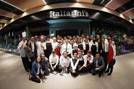
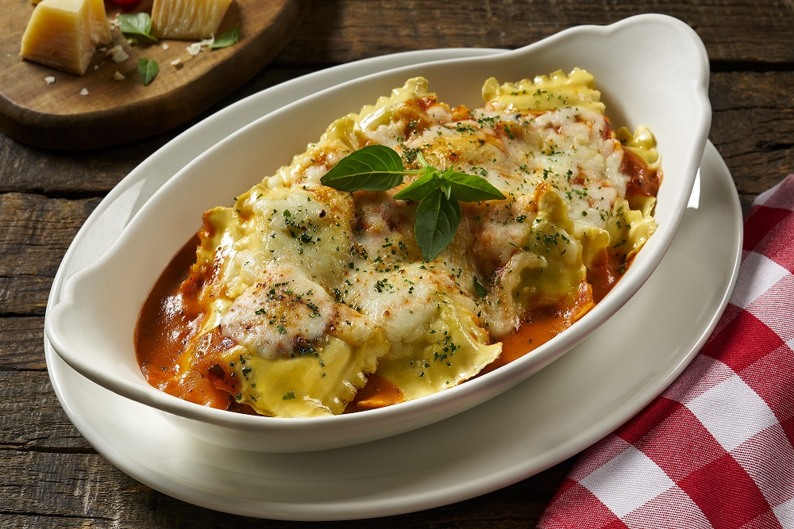
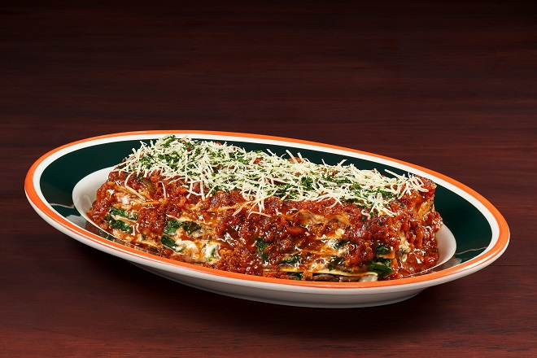
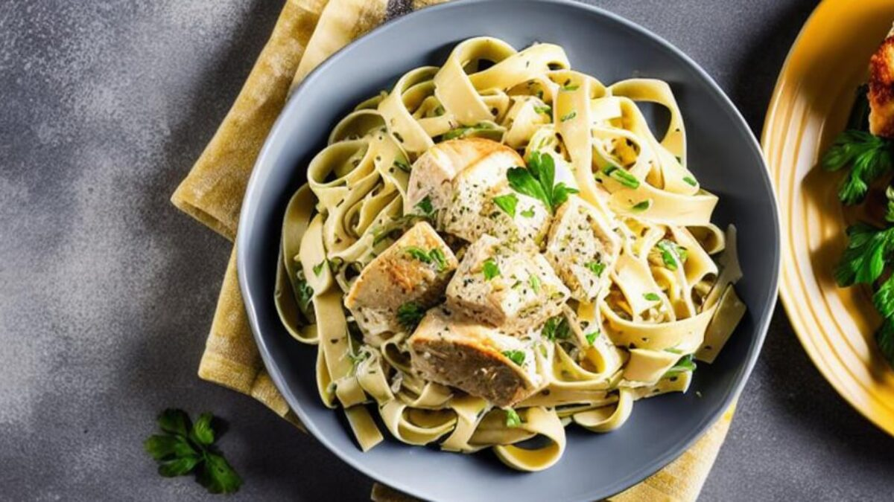
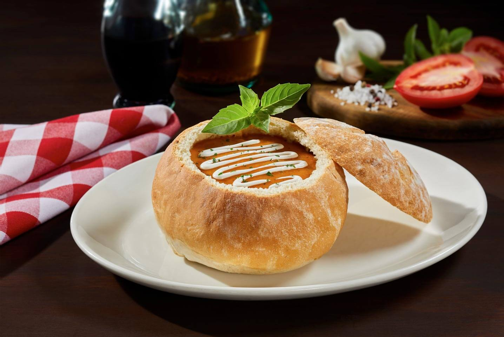

Menu

A lo largo de muchos años, en Italianni’s nos hemos dedicado a buscar y reunir las mejores recetas familiares de Italia, ofreciendo también su historia, aquella que ha trascendido por generaciones, y que hoy se sirve en nuestras mesas para que tengan una ejor experiencia al entrar a nuestras sucursales
Platillos más frecuentes del consumo del comnenzante
Raviolis

Los raviolis son un platillo esquizito para cualquier paladar el cual su metodo de preparacion es algo tardada pero en un platillo esquisito para todo el mundo, la elaboracion de los raviolis son las siguientes suelen estar rellenos de ricota, una especie de requesón (muy común en Italia, Argentina ) y otros tipos de queso, espinaca, ortiga, carne, riñones, sesos, al agrado del cliente estos condimentos pueden ser moificados para un mejor agrado par el y los demas usuarios se sientan satisfecho con el platillo y con el entorno del lugar visitado, el agrado de su paladar sea esperado
Lasaña

La lasaña es una comida de gran gusto para varios comenzales la cual tiene una elaboracion no tan tardada la cuales sus ingredientes son 10-12 placas precocidas de lasaña
600 g de carne picada de ternera
1 cebolla
2 zanahorias
2 tallos de apio
500 g de tomate troceado en conserva (o tomate entero pelado)
500 ml de agua
80 g de queso rallado (cheddar, Parmesano u otro)
Sal y pimienta molida al gusto
Aceite de oliva virgen extra
pasta
La pasta es una comida de facil elaboracion la cual le gusta a los comenzales la cual tine diferentes infredientes como nuestra especialidad nuestra pasta alfredo

1 cucharadita de aceite de oliva 1 diente de ajo, finamente picado1 lata (7.6 onzas líquidas) de Media Crema NESTLÉ® 1/2 taza de leche,3/4 taza (3 onzas) de queso rallado parmesano 1/2 libra de pasta fetuccini, preparada según las instrucciones del paquete conservada calientePerejil fresco picadoSal pimienta negra molida
Zuppa di tomate

Zuppa di tomate es una sopa Cremosa zuppa preparada con jitomate, albahaca y servida en nuestro pan rústico de hierbas. Un delicioso sabor casero muy italiano la favorita de varios comenzales al visitarnos